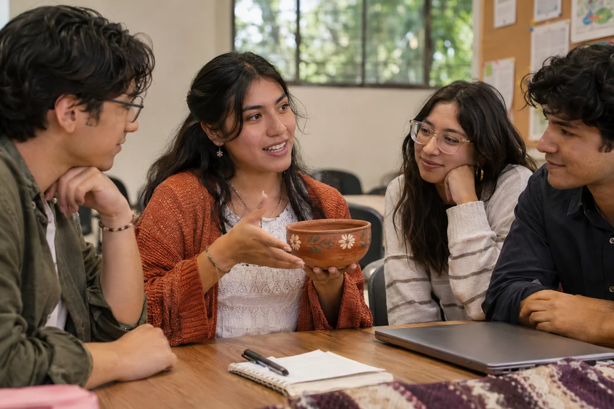
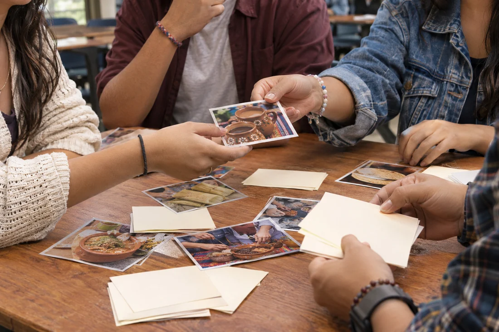
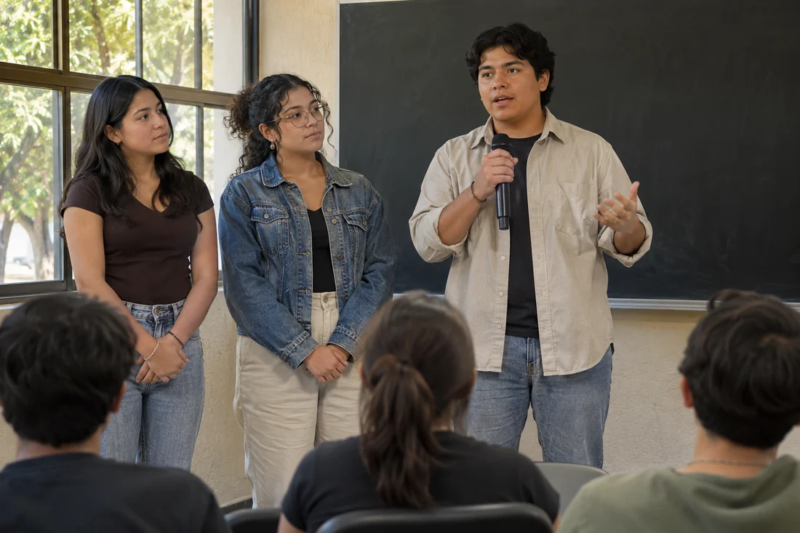

Ideas centrales
El entendimiento intercultural tiene una dimensión ética. El Tema 14 distingue tres rasgos. La aceptación implica reconocer a cada persona como interlocutora con el mismo derecho a participar. La valoración consiste en reconocer lo que distintas experiencias pueden aportar. La empatía ayuda a comprender cómo una decisión se vive desde la perspectiva de alguien más. La reciprocidad exige que todas las personas tengan la oportunidad de expresar y revisar sus razones (Universidad Tecmilenio, 2023b).
El marco de competencias interculturales de la UNESCO (2013/2017) incluye la escucha, el respeto y la capacidad de considerar perspectivas distintas. Llevar estas competencias a la práctica exige reconocer los propios hábitos de interpretación. Si una persona hace una pausa antes de responder, por ejemplo, preguntar cómo entiende el tema nos da más información sobre su postura que sacar conclusiones de su silencio.
Aristóteles (ca. 350 a. C./1985, libro II) vincula la virtud ética con la formación de hábitos. Podemos aplicar esa idea al trato intercultural reservando turnos para que cada persona explique su postura y pidiendo retroalimentación sobre los acuerdos. El Jubilee Centre for Character and Virtues (2022) añade que la sabiduría práctica ayuda a discernir cómo aplicar virtudes como el respeto y la justicia en casos concretos. Con estos criterios podemos valorar una propuesta diferente y explicar con razones comunes por qué la adoptaríamos o pediríamos revisarla.
Ejemplo de aplicación
En un equipo universitario, Camila propone que una presentación sobre alimentación incluya un relato oral de su comunidad. Dos compañeros quieren usar solo diapositivas. El equipo escucha qué aporta el relato, se pregunta cómo entenderá el público sus referencias y acuerda darle un segmento breve con una transcripción accesible. Después revisan todas las secciones con el mismo criterio de claridad. Así reconocen a Camila como interlocutora y valoran su propuesta por lo que aporta al objetivo.
Por qué elegí este subtema
Elegí los rasgos éticos del entendimiento intercultural porque ayudan a reconocer en acciones concretas lo que significa tratar a otras personas con reciprocidad. En el módulo, vinculan las actitudes personales con la forma de organizar una conversación o un equipo. Quien lea este tema puede usarlo para reconocer cuándo una costumbre propia se ha vuelto un criterio que limita la participación de los demás.
Galería del subtema


